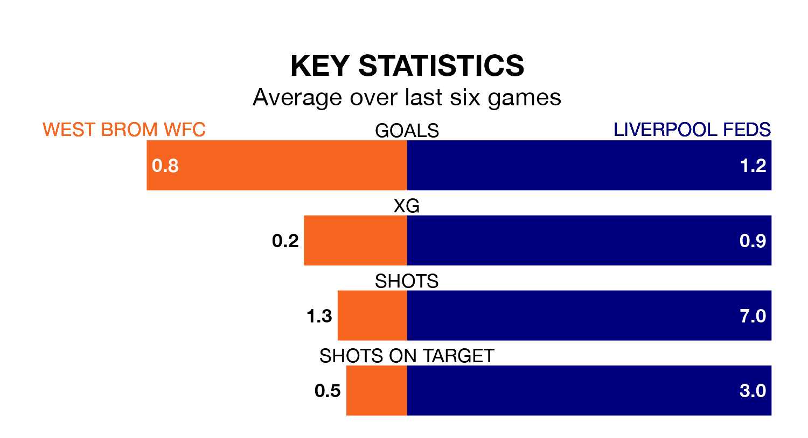

West Brom WFC are on a poor run ahead of hosting Liverpool Feds at the Valley Stadium on Sunday, with just four points collected from their last six games.
West Brom WFC have picked up one win and one draw in their last six Womens National League – Premier Division North games, and face a Liverpool Feds side whose last six games have brought one win and three draws.
West Brom WFC are 10th in the table after 11 games, of which they have won three and drawn two, earning 11 points.
Liverpool Feds are five places ahead of the home team in fifth, with four wins and three draws putting them on 15 points.
With 16 goals in 11 games so far this season, West Brom WFC are scoring at below the league average rate with 1.5 goals per game. And they are conceding more than average, letting in 24 goals at a rate of 2.2 per game.
The visitors are also below average scorers, with 1.8 goals per game, compared to a league average of 1.9. They have conceded 2.3 goals per game.
West Brom WFC's last match was on January 7, a 0-0 draw against Nottingham Forest Women.
Liverpool Feds drew 1-1 with Halifax Women last time out, on December 10.
Updated: 10:50, 10/01/24